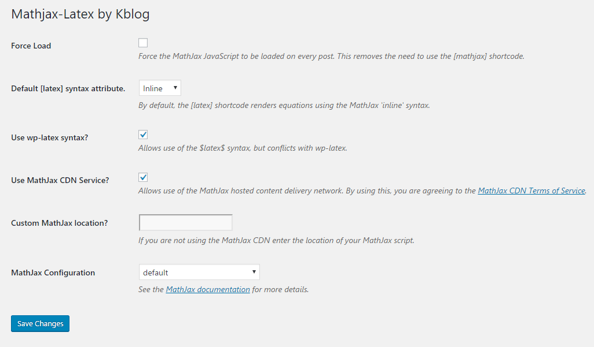

<!DOCTYPE html>


<html lang="en">


<head>
  <meta charset="utf-8" />
   
  <meta name="keywords" content="c,c++,java,python,leetcode,algorithm,reading,life,moods,machine-learning,data-mining,deep-learning,AI" />
   
  <meta name="description" content="一个分享机器学习、算法与数据结构，个人学习心得、读书笔记、生活的博客。" />
  
  <meta name="viewport" content="width=device-width, initial-scale=1, maximum-scale=1" />
  <title>
    三个 wordpress 技巧 |  一个分享机器学习、算法与数据结构，个人学习心得、读书笔记、生活的博客。
  </title>
  <meta name="generator" content="hexo-theme-ayer">
  
  <link rel="shortcut icon" href="/favicon.ico" />
  
  
<link rel="stylesheet" href="/dist/main.css">

  
<link rel="stylesheet" href="https://cdn.jsdelivr.net/gh/Shen-Yu/cdn/css/remixicon.min.css">

  
<link rel="stylesheet" href="/css/custom.css">

  
  
<script src="https://cdn.jsdelivr.net/npm/pace-js@1.0.2/pace.min.js"></script>

  
  

  

<link href="https://cdn.bootcss.com/KaTeX/0.11.1/katex.min.css" rel="stylesheet" /></head>

</html>

<body>
  <div id="app">
    
      
    <main class="content on">
      <section class="outer">
  <article
  id="post-wordpress-comment-email-notice-and-wordpress-latex-and-wordpress-reward"
  class="article article-type-post"
  itemscope
  itemprop="blogPost"
  data-scroll-reveal
>
  <div class="article-inner">
    
    <header class="article-header">
       
<h1 class="article-title sea-center" style="border-left:0" itemprop="name">
  三个 wordpress 技巧
</h1>
 

    </header>
     
    <div class="article-meta">
      <a href="/wordpress-comment-email-notice-and-wordpress-latex-and-wordpress-reward/" class="article-date">
  <time datetime="2017-01-28T09:02:58.000Z" itemprop="datePublished">2017-01-28</time>
</a> 
      
  <div class="article-category">
    <a class="article-category-link" href="/categories/others/">others</a> / <a class="article-category-link" href="/categories/others/%E5%BB%BA%E7%AB%99%E7%BB%8F%E9%AA%8C/">建站经验</a>
  </div>
 
       
        
<div class="word_count">
    <span class="post-time">
        <span class="post-meta-item-icon">
            <i class="ri-quill-pen-line"></i>
            <span class="post-meta-item-text"> Word count:</span>
            <span class="post-count">1.8k</span>
        </span>
    </span>

    <span class="post-time">
        &nbsp; | &nbsp;
        <span class="post-meta-item-icon">
            <i class="ri-book-open-line"></i>
            <span class="post-meta-item-text"> Reading time≈</span>
            <span class="post-count">9 min</span>
        </span>
    </span>
</div>

      
       
        <div class="word_count">
    <span class="post-meta-item-icon">
        <i class="ri-eye-fill"></i> 
        阅读数:<span id="/wordpress-comment-email-notice-and-wordpress-latex-and-wordpress-reward/" data-flag-title="三个 wordpress 技巧" class="leancloud_visitors">0</span>次
    </span>
</div>
      
    </div>
      
    <div class="tocbot"></div>


  
    <div class="article-entry" itemprop="articleBody">
       
  <p>本文时wordpress三个技巧集合，内容包括</p>
<ul>
<li>wordpress评论回复邮件通知</li>
<li>wordpress下支持latex的方法</li>
<li>wordpress打赏模块</li>
</ul>
<a id="more"></a>
<h2 id="评论回复邮件通知">评论回复邮件通知</h2>
<p>不用多说好久，因为之前经常挂+之前不支持https(现在好像支持了)+吞了我的评论。</p>
<p>评论本博客的可以发现，本博客有评论回复通知，怎么做到的呢？</p>
<p>其实很简单，在当前主题的functions.php中添加如下（要在第八第九行填入你的邮箱账号和密码）：</p>
<figure class="highlight plain"><table><tr><td class="gutter"><pre><span class="line">1</span><br><span class="line">2</span><br><span class="line">3</span><br><span class="line">4</span><br><span class="line">5</span><br><span class="line">6</span><br><span class="line">7</span><br><span class="line">8</span><br><span class="line">9</span><br><span class="line">10</span><br><span class="line">11</span><br><span class="line">12</span><br><span class="line">13</span><br><span class="line">14</span><br><span class="line">15</span><br><span class="line">16</span><br><span class="line">17</span><br><span class="line">18</span><br><span class="line">19</span><br><span class="line">20</span><br><span class="line">21</span><br><span class="line">22</span><br><span class="line">23</span><br><span class="line">24</span><br><span class="line">25</span><br><span class="line">26</span><br><span class="line">27</span><br><span class="line">28</span><br><span class="line">29</span><br><span class="line">30</span><br><span class="line">31</span><br><span class="line">32</span><br><span class="line">33</span><br><span class="line">34</span><br><span class="line">35</span><br><span class="line">36</span><br><span class="line">37</span><br></pre></td><td class="code"><pre><span class="line">&#x2F;&#x2F; 使用smtp发邮件</span><br><span class="line">function mail_smtp( $phpmailer ) &#123;</span><br><span class="line">    $phpmailer-&gt;IsSMTP();</span><br><span class="line">    $phpmailer-&gt;SMTPAuth &#x3D; true;</span><br><span class="line">    $phpmailer-&gt;Port &#x3D; 465;</span><br><span class="line">    $phpmailer-&gt;SMTPSecure &#x3D; &quot;ssl&quot;;</span><br><span class="line">    $phpmailer-&gt;Host &#x3D; &quot;smtp.qq.com&quot;;</span><br><span class="line">    $phpmailer-&gt;Username &#x3D; &quot;&quot;;</span><br><span class="line">    $phpmailer-&gt;Password &#x3D; &quot;&quot;;</span><br><span class="line">&#125;</span><br><span class="line">add_action(&#39;phpmailer_init&#39;, &#39;mail_smtp&#39;);</span><br><span class="line"></span><br><span class="line"></span><br><span class="line"> &#x2F;&#x2F;comment_mail_notify</span><br><span class="line">function comment_mail_notify($comment_id) &#123;</span><br><span class="line">	$blogname &#x3D; wp_specialchars_decode(get_option(&#39;blogname&#39;), ENT_QUOTES);</span><br><span class="line">	$comment &#x3D; get_comment($comment_id);</span><br><span class="line">	$parent_id &#x3D; $comment-&gt;comment_parent ? $comment-&gt;comment_parent : &#39;&#39;;</span><br><span class="line">	$spam_confirmed &#x3D; $comment-&gt;comment_approved;</span><br><span class="line">	if (($parent_id !&#x3D; &#39;&#39;) &amp;&amp; ($spam_confirmed !&#x3D; &#39;spam&#39;)) &#123;</span><br><span class="line">		$wp_email &#x3D; &#39;no-replay@hrwhisper.me&#39;;</span><br><span class="line">		$to &#x3D; trim(get_comment($parent_id)-&gt;comment_author_email);</span><br><span class="line">		$subject &#x3D; &#39;您在 [&#39;.$blogname.&#39;] 中的留言有了新的回复&#39;;</span><br><span class="line">		$message &#x3D; &#39;&lt;div style&#x3D;&quot;color:#555;font:12px&#x2F;1.5 微软雅黑,Tahoma,Helvetica,Arial,sans-serif;width:650px;margin:50px auto;border-top: none;box-shadow:0 0px 3px #aaaaaa;&quot; &gt;&lt;div style&#x3D;&quot;background-color:white;border-top:2px solid #12ADDB;box-shadow:0 1px 3px #AAAAAA;line-padding:0 15px 12px;width:650px;color:#555555;font-family:微软雅黑, Arial;;font-size:12px;&quot;&gt;&lt;h2 style&#x3D;&quot;border-bottom:1px solid #DDD;font-size:14px;font-weight:normal;padding:8px 0 10px 8px;&quot;&gt;&lt;span style&#x3D;&quot;color: #12ADDB;font-weight: bold;&quot;&gt;&gt; &lt;&#x2F;span&gt;您在 &lt;a style&#x3D;&quot;text-decoration:none; color:#58B5F5;font-weight:600;&quot; href&#x3D;&quot;&#39;.home_url().&#39;&quot;&gt;&#39;.$blogname.&#39;&lt;&#x2F;a&gt; 博客上的留言有回复啦！(｡◕‿◕｡)&lt;&#x2F;h2&gt;&lt;div style&#x3D;&quot;padding:0 12px 0 12px;margin-top:18px&quot;&gt;</span><br><span class="line">			&lt;p&gt;您好, &#39;.trim(get_comment($parent_id)-&gt;comment_author).&#39;! 您发表在文章 《&#39;.get_the_title($comment-&gt;comment_post_ID).&#39;》 的评论:&lt;&#x2F;p&gt;</span><br><span class="line">			&lt;p style&#x3D;&quot;background-color: #EEE;border: 1px solid #DDD;padding: 20px;margin: 15px 0;&quot;&gt;&#39;.nl2br(strip_tags(get_comment($parent_id)-&gt;comment_content)).&#39;&lt;&#x2F;p&gt;</span><br><span class="line">			&lt;p&gt;&#39;.trim($comment-&gt;comment_author).&#39;  给您的回复如下:&lt;&#x2F;p&gt;</span><br><span class="line">			&lt;p style&#x3D;&quot;background-color: #EEE;border: 1px solid #DDD;padding: 20px;margin: 15px 0;&quot;&gt;&#39;.nl2br(strip_tags($comment-&gt;comment_content)).&#39;&lt;&#x2F;p&gt;</span><br><span class="line">			&lt;p&gt;您可以点击  &lt;a style&#x3D;&quot;text-decoration:none; color:#5692BC&quot; href&#x3D;&quot;&#39;.htmlspecialchars(get_comment_link($parent_id)).&#39;&quot;&gt;这里查看回复的完整內容&lt;&#x2F;a&gt;  &lt;&#x2F;p&gt;</span><br><span class="line">			&lt;p&gt; 感谢您对 &lt;a style&#x3D;&quot;text-decoration:none; color:#5692BC&quot; href&#x3D;&quot;&#39;.home_url().&#39;&quot;&gt;&#39;.$blogname.&#39;&lt;&#x2F;a&gt; 的关注，如您有任何疑问，欢迎在博客留言，我会一一解答噢~( •̀ ω •́ )y &lt;&#x2F;p&gt;</span><br><span class="line">			&lt;p style&#x3D;&quot;padding-bottom: 15px;&quot;&gt;(此邮件由系统自动发出, 请勿回复)&lt;&#x2F;p&gt;&lt;&#x2F;div&gt;&lt;&#x2F;div&gt;&lt;&#x2F;div&gt;&#39;;</span><br><span class="line">		$from &#x3D; &quot;From: \&quot;&quot;.get_option(&#39;blogname&#39;).&quot;\&quot; &lt;$wp_email&gt;&quot;;</span><br><span class="line">		$headers &#x3D; &quot;$from\nContent-Type: text&#x2F;html; charset&#x3D;&quot;.get_option(&#39;blog_charset&#39;).&quot;\n&quot;;</span><br><span class="line">		wp_mail($to, $subject, $message, $headers);</span><br><span class="line">	&#125;</span><br><span class="line">&#125;</span><br><span class="line">add_action(&#39;comment_post&#39;, &#39;comment_mail_notify&#39;);</span><br></pre></td></tr></table></figure>
<p>效果如下：</p>
<p></p>
<h2 id="wordpress-latex">Wordpress latex</h2>
<p>wordpress默认没有支持latex，这让我们打公式的时候无比的蛋疼。比如上次我写的线性规划的那篇<a target="_blank" rel="noopener" href="https://www.hrwhisper.me/introduction-to-simplex-algorithm/">《线性规划-单纯形算法详解》</a>，在本地用typora写好后，然后再将公式截图成图片，然后在上传，无比的蛋疼和麻烦，而且后期更新公式更加麻烦了。</p>
<p>有没有直接让wordpress支持latex的办法呢？</p>
<p>答案时有的，就是安装插件！这里时mathjax-latex</p>
<p>安装后，进入设置页面如下：</p>
<p></p>
<p>一些说明：</p>
<ul>
<li>
<p>如果勾选Force Load，那么在任何页面都会加载mathjax.js，消耗比较大，建议在有公式的页面中写上 [mathjax]标签即可。一个该标签放置的位置如下（并且我放在read more tag后面，主页也不会加载）</p>
<ul>
<li></li>
</ul>
</li>
<li>
<p>一般而言，我们直接使用MathJax的CDN即可。如果要用本地的，将Use MathJax CDN Service的勾去掉，然后在Custom MathJax location中填入地址即可。</p>
</li>
</ul>
<h3 id="使用方法">使用方法</h3>
<h4 id="多行方式">多行方式</h4>
<p>以两个<span class="katex"><span class="katex-mathml"><math xmlns="http://www.w3.org/1998/Math/MathML"><semantics><mrow><mtext>作为起始和终止，需要注意的注意起始的两个</mtext></mrow><annotation encoding="application/x-tex">作为起始和终止，需要注意的注意起始的两个</annotation></semantics></math></span><span class="katex-html" aria-hidden="true"><span class="base"><span class="strut" style="height:0.68333em;vertical-align:0em;"></span><span class="mord cjk_fallback">作</span><span class="mord cjk_fallback">为</span><span class="mord cjk_fallback">起</span><span class="mord cjk_fallback">始</span><span class="mord cjk_fallback">和</span><span class="mord cjk_fallback">终</span><span class="mord cjk_fallback">止</span><span class="mord cjk_fallback">，</span><span class="mord cjk_fallback">需</span><span class="mord cjk_fallback">要</span><span class="mord cjk_fallback">注</span><span class="mord cjk_fallback">意</span><span class="mord cjk_fallback">的</span><span class="mord cjk_fallback">注</span><span class="mord cjk_fallback">意</span><span class="mord cjk_fallback">起</span><span class="mord cjk_fallback">始</span><span class="mord cjk_fallback">的</span><span class="mord cjk_fallback">两</span><span class="mord cjk_fallback">个</span></span></span></span>后面紧接公式第一行，而最后的两个$不要另起一行（否则wordpress可能自动插入段落）。</p>
<p>如</p>
<figure class="highlight plain"><table><tr><td class="gutter"><pre><span class="line">1</span><br></pre></td><td class="code"><pre><span class="line">$$\sum_&#123;n&#x3D;1&#125;^Na_n$$</span><br></pre></td></tr></table></figure>
<p>效果如下：</p>
<p class='katex-block'><span class="katex-display"><span class="katex"><span class="katex-mathml"><math xmlns="http://www.w3.org/1998/Math/MathML"><semantics><mrow><munderover><mo>∑</mo><mrow><mi>n</mi><mo>=</mo><mn>1</mn></mrow><mi>N</mi></munderover><msub><mi>a</mi><mi>n</mi></msub></mrow><annotation encoding="application/x-tex">\sum_{n=1}^Na_n
</annotation></semantics></math></span><span class="katex-html" aria-hidden="true"><span class="base"><span class="strut" style="height:3.0954490000000003em;vertical-align:-1.267113em;"></span><span class="mop op-limits"><span class="vlist-t vlist-t2"><span class="vlist-r"><span class="vlist" style="height:1.8283360000000002em;"><span style="top:-1.882887em;margin-left:0em;"><span class="pstrut" style="height:3.05em;"></span><span class="sizing reset-size6 size3 mtight"><span class="mord mtight"><span class="mord mathdefault mtight">n</span><span class="mrel mtight">=</span><span class="mord mtight">1</span></span></span></span><span style="top:-3.050005em;"><span class="pstrut" style="height:3.05em;"></span><span><span class="mop op-symbol large-op">∑</span></span></span><span style="top:-4.3000050000000005em;margin-left:0em;"><span class="pstrut" style="height:3.05em;"></span><span class="sizing reset-size6 size3 mtight"><span class="mord mathdefault mtight" style="margin-right:0.10903em;">N</span></span></span></span><span class="vlist-s">​</span></span><span class="vlist-r"><span class="vlist" style="height:1.267113em;"><span></span></span></span></span></span><span class="mspace" style="margin-right:0.16666666666666666em;"></span><span class="mord"><span class="mord mathdefault">a</span><span class="msupsub"><span class="vlist-t vlist-t2"><span class="vlist-r"><span class="vlist" style="height:0.151392em;"><span style="top:-2.5500000000000003em;margin-left:0em;margin-right:0.05em;"><span class="pstrut" style="height:2.7em;"></span><span class="sizing reset-size6 size3 mtight"><span class="mord mathdefault mtight">n</span></span></span></span><span class="vlist-s">​</span></span><span class="vlist-r"><span class="vlist" style="height:0.15em;"><span></span></span></span></span></span></span></span></span></span></span></p>
<h4 id="单行的形式">单行的形式</h4>
<p>在括号对前分别加\，例如:</p>
<figure class="highlight plain"><table><tr><td class="gutter"><pre><span class="line">1</span><br></pre></td><td class="code"><pre><span class="line">\(\sum_&#123;n&#x3D;1&#125;^Na_n\)</span><br></pre></td></tr></table></figure>
<p>效果为： <span class="katex"><span class="katex-mathml"><math xmlns="http://www.w3.org/1998/Math/MathML"><semantics><mrow><msubsup><mo>∑</mo><mrow><mi>n</mi><mo>=</mo><mn>1</mn></mrow><mi>N</mi></msubsup><msub><mi>a</mi><mi>n</mi></msub></mrow><annotation encoding="application/x-tex">\sum_{n=1}^Na_n</annotation></semantics></math></span><span class="katex-html" aria-hidden="true"><span class="base"><span class="strut" style="height:1.2809409999999999em;vertical-align:-0.29971000000000003em;"></span><span class="mop"><span class="mop op-symbol small-op" style="position:relative;top:-0.0000050000000000050004em;">∑</span><span class="msupsub"><span class="vlist-t vlist-t2"><span class="vlist-r"><span class="vlist" style="height:0.981231em;"><span style="top:-2.40029em;margin-left:0em;margin-right:0.05em;"><span class="pstrut" style="height:2.7em;"></span><span class="sizing reset-size6 size3 mtight"><span class="mord mtight"><span class="mord mathdefault mtight">n</span><span class="mrel mtight">=</span><span class="mord mtight">1</span></span></span></span><span style="top:-3.2029em;margin-right:0.05em;"><span class="pstrut" style="height:2.7em;"></span><span class="sizing reset-size6 size3 mtight"><span class="mord mathdefault mtight" style="margin-right:0.10903em;">N</span></span></span></span><span class="vlist-s">​</span></span><span class="vlist-r"><span class="vlist" style="height:0.29971000000000003em;"><span></span></span></span></span></span></span><span class="mspace" style="margin-right:0.16666666666666666em;"></span><span class="mord"><span class="mord mathdefault">a</span><span class="msupsub"><span class="vlist-t vlist-t2"><span class="vlist-r"><span class="vlist" style="height:0.151392em;"><span style="top:-2.5500000000000003em;margin-left:0em;margin-right:0.05em;"><span class="pstrut" style="height:2.7em;"></span><span class="sizing reset-size6 size3 mtight"><span class="mord mathdefault mtight">n</span></span></span></span><span class="vlist-s">​</span></span><span class="vlist-r"><span class="vlist" style="height:0.15em;"><span></span></span></span></span></span></span></span></span></span></p>
<h2 id="打赏模块">打赏模块</h2>
<p>可以看到本博客开启了打赏模块，你可以先移动到文章后面有个红色的按钮体验一下。 ：）</p>
<p>其源代码如下：</p>
<figure class="highlight plain"><table><tr><td class="gutter"><pre><span class="line">1</span><br><span class="line">2</span><br><span class="line">3</span><br><span class="line">4</span><br><span class="line">5</span><br><span class="line">6</span><br><span class="line">7</span><br><span class="line">8</span><br><span class="line">9</span><br><span class="line">10</span><br><span class="line">11</span><br><span class="line">12</span><br><span class="line">13</span><br><span class="line">14</span><br><span class="line">15</span><br><span class="line">16</span><br><span class="line">17</span><br><span class="line">18</span><br><span class="line">19</span><br><span class="line">20</span><br><span class="line">21</span><br><span class="line">22</span><br><span class="line">23</span><br><span class="line">24</span><br><span class="line">25</span><br><span class="line">26</span><br><span class="line">27</span><br><span class="line">28</span><br><span class="line">29</span><br><span class="line">30</span><br><span class="line">31</span><br><span class="line">32</span><br><span class="line">33</span><br></pre></td><td class="code"><pre><span class="line">function support_me_html()&#123;</span><br><span class="line">	$message &#x3D; array(&quot;您的支持将鼓励我继续创作！&quot;,&quot;听说帅的人已经打赏了&quot;,&quot;打赏一杯咖啡钱呗&quot;);</span><br><span class="line">	$before &#x3D; &lt;&lt;&lt;STR</span><br><span class="line">   &lt;div class&#x3D;&quot;row text-center&quot; style&#x3D;&quot;padding: 50px 0;border-top: 1px dashed #E7E7E7;&quot;&gt;</span><br><span class="line">		   &lt;b&gt;&lt;p style&#x3D;&quot;font-size:18px;&quot;&gt;</span><br><span class="line">STR;</span><br><span class="line">	$after &#x3D; &lt;&lt;&lt;STR</span><br><span class="line">			 &lt;&#x2F;p&gt;&lt;&#x2F;b&gt;&lt;button data-toggle&#x3D;&quot;modal&quot; data-target&#x3D;&quot;#myModal&quot; class&#x3D;&quot;btn btn-danger btn-lg&quot; style&#x3D;&quot;padding:8px 16px;font-weight:bold;&quot;&gt;打赏&lt;&#x2F;button&gt;</span><br><span class="line">	&lt;&#x2F;div&gt;</span><br><span class="line">		&lt;div class&#x3D;&quot;modal fade&quot; id&#x3D;&quot;myModal&quot; tabindex&#x3D;&quot;-1&quot; role&#x3D;&quot;dialog&quot; aria-labelledby&#x3D;&quot;myModalLabel&quot; aria-hidden&#x3D;&quot;true&quot;&gt;</span><br><span class="line">	   &lt;div class&#x3D;&quot;modal-dialog&quot; style&#x3D;&quot;max-width:400px&quot;&gt;</span><br><span class="line">		  &lt;div class&#x3D;&quot;modal-content&quot;&gt;</span><br><span class="line">			 &lt;div class&#x3D;&quot;modal-body&quot;&gt;</span><br><span class="line">			 &lt;button type&#x3D;&quot;button&quot; class&#x3D;&quot;close&quot; data-dismiss&#x3D;&quot;modal&quot; aria-hidden&#x3D;&quot;true&quot;&gt;&amp;times;&lt;&#x2F;button&gt;</span><br><span class="line">				&lt;ul id&#x3D;&quot;myTab&quot; class&#x3D;&quot;nav nav-tabs&quot;&gt;</span><br><span class="line">				   &lt;li class&#x3D;&quot;active&quot;&gt; &lt;a href&#x3D;&quot;#wechat_pay_div&quot; data-toggle&#x3D;&quot;tab&quot;&gt; 微信 &lt;&#x2F;a&gt; &lt;&#x2F;li&gt;</span><br><span class="line">				   &lt;li&gt;&lt;a href&#x3D;&quot;#alipay_div&quot; data-toggle&#x3D;&quot;tab&quot;&gt; 支付宝 &lt;&#x2F;a&gt;&lt;&#x2F;li&gt;</span><br><span class="line">			   &lt;&#x2F;ul&gt;</span><br><span class="line">				&lt;div id&#x3D;&quot;myTabContent&quot; class&#x3D;&quot;tab-content&quot;&gt;</span><br><span class="line">				   &lt;div class&#x3D;&quot;tab-pane fade in active&quot; id&#x3D;&quot;wechat_pay_div&quot;&gt;</span><br><span class="line">					 &lt;img src&#x3D;&quot;&#x2F;images&#x2F;wechat_pay.png&quot; alt&#x3D;&quot;wechat_pay&quot; &gt;</span><br><span class="line">				   &lt;&#x2F;div&gt;</span><br><span class="line">				   &lt;div class&#x3D;&quot;tab-pane fade&quot; id&#x3D;&quot;alipay_div&quot;&gt;</span><br><span class="line">					  &lt;img src&#x3D;&quot;&#x2F;images&#x2F;alipay.jpg&quot; alt&#x3D;&quot;alipay&quot; &gt;</span><br><span class="line">				   &lt;&#x2F;div&gt;</span><br><span class="line">				&lt;&#x2F;div&gt;</span><br><span class="line">			 &lt;&#x2F;div&gt;</span><br><span class="line">		  &lt;&#x2F;div&gt;&lt;!-- &#x2F;.modal-content --&gt;</span><br><span class="line">		&lt;&#x2F;div&gt;&lt;!-- &#x2F;.modal --&gt;</span><br><span class="line">	&lt;&#x2F;div&gt;</span><br><span class="line">STR;</span><br><span class="line">   echo $before.$message[array_rand($message,1)].$after;</span><br><span class="line">&#125;</span><br></pre></td></tr></table></figure>
<p></p>
<p>上述的代码使用了随机输出的模式</p>
<ul>
<li>需要bootstrap才行，因为用到了模态框Modal</li>
<li>二维码图片存放在了/images/下</li>
<li>$message数组可以自行修改内容得到不一样的输出效果。</li>
</ul>
<h3 id="使用方法">使用方法</h3>
<ol>
<li>上述的代码添加到当前主题文件的functions.php</li>
<li>在你的主题下输出文章页面（我的是content-single.php）中适当的位置添加</li>
</ol>
<figure class="highlight php"><table><tr><td class="gutter"><pre><span class="line">1</span><br></pre></td><td class="code"><pre><span class="line"><span class="meta">&lt;?php</span> support_me_html(); <span class="meta">?&gt;</span></span><br></pre></td></tr></table></figure>
<p></p>
<h2 id="其它">其它</h2>
<p>其它的比如用百度分享来让浏览的用户进行分享，但是其不支持https，可以见我另一篇博文：<a target="_blank" rel="noopener" href="https://www.hrwhisper.me/baidu-share-not-support-https-solution/">百度分享不支持https的解决方案</a></p>
 
      <!-- reward -->
      
      <div id="reword-out">
        <div id="reward-btn">
          Donate
        </div>
      </div>
      
    </div>
    

    <!-- copyright -->
    
    <div class="declare">
      <ul class="post-copyright">
        <li>
          <i class="ri-copyright-line"></i>
          <strong>Copyright： </strong>
          
          Copyright is owned by the author. For commercial reprints, please contact the author for authorization. For non-commercial reprints, please indicate the source.
          
        </li>
      </ul>
    </div>
    
    <footer class="article-footer">
       
<div class="share-btn">
      <span class="share-sns share-outer">
        <i class="ri-share-forward-line"></i>
        分享
      </span>
      <div class="share-wrap">
        <i class="arrow"></i>
        <div class="share-icons">
          
          <a class="weibo share-sns" href="javascript:;" data-type="weibo">
            <i class="ri-weibo-fill"></i>
          </a>
          <a class="weixin share-sns wxFab" href="javascript:;" data-type="weixin">
            <i class="ri-wechat-fill"></i>
          </a>
          <a class="qq share-sns" href="javascript:;" data-type="qq">
            <i class="ri-qq-fill"></i>
          </a>
          <a class="douban share-sns" href="javascript:;" data-type="douban">
            <i class="ri-douban-line"></i>
          </a>
          <!-- <a class="qzone share-sns" href="javascript:;" data-type="qzone">
            <i class="icon icon-qzone"></i>
          </a> -->
          
          <a class="facebook share-sns" href="javascript:;" data-type="facebook">
            <i class="ri-facebook-circle-fill"></i>
          </a>
          <a class="twitter share-sns" href="javascript:;" data-type="twitter">
            <i class="ri-twitter-fill"></i>
          </a>
          <a class="google share-sns" href="javascript:;" data-type="google">
            <i class="ri-google-fill"></i>
          </a>
        </div>
      </div>
</div>

<div class="wx-share-modal">
    <a class="modal-close" href="javascript:;"><i class="ri-close-circle-line"></i></a>
    <p>扫一扫，分享到微信</p>
    <div class="wx-qrcode">
      
    </div>
</div>

<div id="share-mask"></div>  
  <ul class="article-tag-list" itemprop="keywords"><li class="article-tag-list-item"><a class="article-tag-list-link" href="/tags/wordpress/" rel="tag">wordpress</a></li></ul>

    </footer>
  </div>

   
  <nav class="article-nav">
    
      <a href="/c-dynamic-memory-allocation-and-the-data-struct-of-malloc-and-heap-overflow-attack/" class="article-nav-link">
        <strong class="article-nav-caption">上一篇</strong>
        <div class="article-nav-title">
          
            C动态内存管理 | Malloc 的原理 | 堆溢出攻击
          
        </div>
      </a>
    
    
      <a href="/introction-of-verification-code-and-using-tesseract-ocr-crack-verification-code/" class="article-nav-link">
        <strong class="article-nav-caption">下一篇</strong>
        <div class="article-nav-title">验证码简介 以及用tesseract -OCR识别验证码</div>
      </a>
    
  </nav>

   
<!-- valine评论 -->
<div id="vcomments-box">
  <div id="vcomments"></div>
</div>
<script src="//cdn1.lncld.net/static/js/3.0.4/av-min.js"></script>
<script src="https://cdn.jsdelivr.net/npm/valine@1.4.14/dist/Valine.min.js"></script>
<script>
  new Valine({
    el: "#vcomments",
    app_id: "fVcjWMD8aI6F0qEfKdUaHa4f-gzGzoHsz",
    app_key: "b26lBsbwmVyxTSnNrsBrnv3U",
    path: window.location.pathname,
    avatar: "monsterid",
    placeholder: "给我的文章加点评论吧~",
    recordIP: true,
  });
  const infoEle = document.querySelector("#vcomments .info");
  if (infoEle && infoEle.childNodes && infoEle.childNodes.length > 0) {
    infoEle.childNodes.forEach(function (item) {
      item.parentNode.removeChild(item);
    });
  }
</script>
<style>
  #vcomments-box {
    padding: 5px 30px;
  }

  @media screen and (max-width: 800px) {
    #vcomments-box {
      padding: 5px 0px;
    }
  }

  #vcomments-box #vcomments {
    background-color: #fff;
  }

  .v .vlist .vcard .vh {
    padding-right: 20px;
  }

  .v .vlist .vcard {
    padding-left: 10px;
  }
</style>

 
     
</article>

</section>
      <footer class="footer">
  <div class="outer">
    <ul>
      <li>
        Copyrights &copy;
        2013-2020
        <i class="ri-heart-fill heart_icon"></i> hrwhisper
      </li>
    </ul>
    <ul>
      <li>
        
        
        
        Powered by <a href="https://hexo.io" target="_blank">Hexo</a>
        <span class="division">|</span>
        Theme - <a href="https://github.com/Shen-Yu/hexo-theme-ayer" target="_blank">Ayer</a>
        
      </li>
    </ul>
    <ul>
      <li>
        
        
        <span>
  <span><i class="ri-user-3-fill"></i>Visitors:<span id="busuanzi_value_site_uv"></span></s>
  <span class="division">|</span>
  <span><i class="ri-eye-fill"></i>Views:<span id="busuanzi_value_page_pv"></span></span>
</span>
        
      </li>
    </ul>
    <ul>
      
    </ul>
    <ul>
      
    </ul>
    <ul>
      <li>
        <!-- cnzz统计 -->
        
      </li>
    </ul>
  </div>
</footer>

 
  <script src="https://cdn.bootcss.com/jquery/3.2.1/jquery.min.js"></script>
<script src="//cdn1.lncld.net/static/js/2.5.0/av-min.js"></script>
<script type="text/javascript">
var leancloud_app_id  = 'fVcjWMD8aI6F0qEfKdUaHa4f-gzGzoHsz';
var leancloud_app_key = 'b26lBsbwmVyxTSnNrsBrnv3U';

AV.init({
    appId: leancloud_app_id,
    appKey: leancloud_app_key
});

// https://leancloud.cn/docs/leanstorage_guide-js.html#hash1873238850
function showTime(Counter) {
  console.log("show time");
	let query = new AV.Query(Counter);
  query.greaterThanOrEqualTo("time", 0);		
  query.find().then((results) => {
      if (results.length > 0) {
        let data = results;
        $('.leancloud_visitors').each(function() {
          let url = $(this).attr('id').trim();		
          for (let i = 0; i < data.length; i++) {
            let object = data[i];
            let content = object.get('time');
            let _url = object.get('url');
            if(url == _url){
              $(this).text(content);
            }
          }
        });
      }
  });
}

function addCount(Counter) {
  const obj = $(".leancloud_visitors");
	url = obj.attr('id').trim();
  title = obj.attr('data-flag-title').trim();

  const query = new AV.Query('Counter');
  query.equalTo("url", url);

	query.find().then((results) => {
			if (results.length > 0) {
				var counter = results[0];
				counter.increment("time", 1);
				counter.save(null, {fetchWhenSave: true}).then(() => {
          let content = counter.get('time');
          $(document.getElementById(url)).text(content);
        }, (error)=> {
						console.log('Failed to save Visitor num, with error message: ' + error.message);
        });
			} else {
				var newcounter = new Counter();
				newcounter.set("title", title);
				newcounter.set("url", url);
        newcounter.set("time", 1);
        newcounter.save(null, {fetchWhenSave: true}).then(() => {
          var content = newcounter.get('time');
          $(document.getElementById(url)).text(content);
        }, (error)=> {
          console.log('Failed to create' + error.message);
        });
			}
	});
}

$(function() {
  var Counter = AV.Object.extend("Counter");
	if ($('.leancloud_visitors').length == 1) {
		addCount(Counter);
	} else {
	  showTime(Counter);
  }
}); 
</script>


      <div class="float_btns">
        <div class="totop" id="totop">
  <i class="ri-arrow-up-line"></i>
</div>

<div class="todark" id="todark">
  <i class="ri-moon-line"></i>
</div>

      </div>
    </main>
    <aside class="sidebar on">
      <button class="navbar-toggle"></button>
<nav class="navbar">
  
  <div class="logo">
    <a href="/"></a>
  </div>
  
  <ul class="nav nav-main">
    
    <li class="nav-item">
      <a class="nav-item-link" href="/">主页</a>
    </li>
    
    <li class="nav-item">
      <a class="nav-item-link" href="/archives">归档</a>
    </li>
    
    <li class="nav-item">
      <a class="nav-item-link" href="/categories">分类</a>
    </li>
    
    <li class="nav-item">
      <a class="nav-item-link" href="/tags">标签</a>
    </li>
    
    <li class="nav-item">
      <a class="nav-item-link" href="/blog-building">博客建设</a>
    </li>
    
    <li class="nav-item">
      <a class="nav-item-link" href="/friend-link">友链</a>
    </li>
    
    <li class="nav-item">
      <a class="nav-item-link" href="/leetcode-algorithm-solution">leetcode题解</a>
    </li>
    
    <li class="nav-item">
      <a class="nav-item-link" href="/messageboard">留言板</a>
    </li>
    
    <li class="nav-item">
      <a class="nav-item-link" href="/about-me">关于我</a>
    </li>
    
  </ul>
</nav>
<nav class="navbar navbar-bottom">
  <ul class="nav">
    <li class="nav-item">
      
      <a class="nav-item-link nav-item-search"  title="Search">
        <i class="ri-search-line"></i>
      </a>
      
      
    </li>
  </ul>
</nav>
<div class="search-form-wrap">
  <div class="local-search local-search-plugin">
  <input type="search" id="local-search-input" class="local-search-input" placeholder="Search...">
  <div id="local-search-result" class="local-search-result"></div>
</div>
</div>
    </aside>
    <script>
      if (window.matchMedia("(max-width: 768px)").matches) {
        document.querySelector('.content').classList.remove('on');
        document.querySelector('.sidebar').classList.remove('on');
      }
    </script>
    <div id="mask"></div>

<!-- #reward -->
<div id="reward">
  <span class="close"><i class="ri-close-line"></i></span>
  <p class="reward-p"><i class="ri-cup-line"></i>请我喝杯咖啡吧~</p>
  <div class="reward-box">
    
    <div class="reward-item">
      
      <span class="reward-type">支付宝</span>
    </div>
    
    
    <div class="reward-item">
      
      <span class="reward-type">微信</span>
    </div>
    
  </div>
</div>
    
<script src="/js/jquery-2.0.3.min.js"></script>


<script src="/js/lazyload.min.js"></script>

<!-- Tocbot -->


<script src="/js/tocbot.min.js"></script>

<script>
  tocbot.init({
    tocSelector: '.tocbot',
    contentSelector: '.article-entry',
    headingSelector: 'h1, h2, h3',
    hasInnerContainers: true,
    scrollSmooth: false,
	  scrollSmoothDuration: 420,
    scrollContainer: 'main',
    positionFixedSelector: '.tocbot',
    positionFixedClass: 'is-position-fixed',
    fixedSidebarOffset: 'auto',
	collapseDepth: 2,
  });
</script>

<script src="https://cdn.jsdelivr.net/npm/jquery-modal@0.9.2/jquery.modal.min.js"></script>
<link rel="stylesheet" href="https://cdn.jsdelivr.net/npm/jquery-modal@0.9.2/jquery.modal.min.css">
<script src="https://cdn.jsdelivr.net/npm/justifiedGallery@3.7.0/dist/js/jquery.justifiedGallery.min.js"></script>

<script src="/dist/main.js"></script>

<!-- ImageViewer -->

<!-- Root element of PhotoSwipe. Must have class pswp. -->
<div class="pswp" tabindex="-1" role="dialog" aria-hidden="true">

    <!-- Background of PhotoSwipe. 
         It's a separate element as animating opacity is faster than rgba(). -->
    <div class="pswp__bg"></div>

    <!-- Slides wrapper with overflow:hidden. -->
    <div class="pswp__scroll-wrap">

        <!-- Container that holds slides. 
            PhotoSwipe keeps only 3 of them in the DOM to save memory.
            Don't modify these 3 pswp__item elements, data is added later on. -->
        <div class="pswp__container">
            <div class="pswp__item"></div>
            <div class="pswp__item"></div>
            <div class="pswp__item"></div>
        </div>

        <!-- Default (PhotoSwipeUI_Default) interface on top of sliding area. Can be changed. -->
        <div class="pswp__ui pswp__ui--hidden">

            <div class="pswp__top-bar">

                <!--  Controls are self-explanatory. Order can be changed. -->

                <div class="pswp__counter"></div>

                <button class="pswp__button pswp__button--close" title="Close (Esc)"></button>

                <button class="pswp__button pswp__button--share" style="display:none" title="Share"></button>

                <button class="pswp__button pswp__button--fs" title="Toggle fullscreen"></button>

                <button class="pswp__button pswp__button--zoom" title="Zoom in/out"></button>

                <!-- Preloader demo http://codepen.io/dimsemenov/pen/yyBWoR -->
                <!-- element will get class pswp__preloader--active when preloader is running -->
                <div class="pswp__preloader">
                    <div class="pswp__preloader__icn">
                        <div class="pswp__preloader__cut">
                            <div class="pswp__preloader__donut"></div>
                        </div>
                    </div>
                </div>
            </div>

            <div class="pswp__share-modal pswp__share-modal--hidden pswp__single-tap">
                <div class="pswp__share-tooltip"></div>
            </div>

            <button class="pswp__button pswp__button--arrow--left" title="Previous (arrow left)">
            </button>

            <button class="pswp__button pswp__button--arrow--right" title="Next (arrow right)">
            </button>

            <div class="pswp__caption">
                <div class="pswp__caption__center"></div>
            </div>

        </div>

    </div>

</div>

<link rel="stylesheet" href="https://cdn.jsdelivr.net/npm/photoswipe@4.1.3/dist/photoswipe.min.css">
<link rel="stylesheet" href="https://cdn.jsdelivr.net/npm/photoswipe@4.1.3/dist/default-skin/default-skin.min.css">
<script src="https://cdn.jsdelivr.net/npm/photoswipe@4.1.3/dist/photoswipe.min.js"></script>
<script src="https://cdn.jsdelivr.net/npm/photoswipe@4.1.3/dist/photoswipe-ui-default.min.js"></script>

<script>
    function viewer_init() {
        let pswpElement = document.querySelectorAll('.pswp')[0];
        let $imgArr = document.querySelectorAll(('.article-entry img:not(.reward-img)'))

        $imgArr.forEach(($em, i) => {
            $em.onclick = () => {
                // slider展开状态
                // todo: 这样不好，后面改成状态
                if (document.querySelector('.left-col.show')) return
                let items = []
                $imgArr.forEach(($em2, i2) => {
                    let img = $em2.getAttribute('data-idx', i2)
                    let src = $em2.getAttribute('data-target') || $em2.getAttribute('src')
                    let title = $em2.getAttribute('alt')
                    // 获得原图尺寸
                    const image = new Image()
                    image.src = src
                    items.push({
                        src: src,
                        w: image.width || $em2.width,
                        h: image.height || $em2.height,
                        title: title
                    })
                })
                var gallery = new PhotoSwipe(pswpElement, PhotoSwipeUI_Default, items, {
                    index: parseInt(i)
                });
                gallery.init()
            }
        })
    }
    viewer_init()
</script>

<!-- MathJax -->

<script type="text/x-mathjax-config">
  MathJax.Hub.Config({
      tex2jax: {
          inlineMath: [ ['$','$'], ["\\(","\\)"]  ],
          processEscapes: true,
          skipTags: ['script', 'noscript', 'style', 'textarea', 'pre', 'code']
      }
  });

  MathJax.Hub.Queue(function() {
      var all = MathJax.Hub.getAllJax(), i;
      for(i=0; i < all.length; i += 1) {
          all[i].SourceElement().parentNode.className += ' has-jax';
      }
  });
</script>

<script src="https://cdn.jsdelivr.net/npm/mathjax@2.7.6/unpacked/MathJax.js?config=TeX-AMS-MML_HTMLorMML"></script>
<script>
  var ayerConfig = {
    mathjax: true
  }
</script>

<!-- Katex -->

<!-- busuanzi  -->


<script src="/js/busuanzi-2.3.pure.min.js"></script>


<!-- ClickLove -->

<!-- ClickBoom1 -->

<!-- ClickBoom2 -->

<!-- CodeCopy -->


<link rel="stylesheet" href="/css/clipboard.css">

<script src="https://cdn.jsdelivr.net/npm/clipboard@2/dist/clipboard.min.js"></script>
<script>
  function wait(callback, seconds) {
    var timelag = null;
    timelag = window.setTimeout(callback, seconds);
  }
  !function (e, t, a) {
    var initCopyCode = function(){
      var copyHtml = '';
      copyHtml += '<button class="btn-copy" data-clipboard-snippet="">';
      copyHtml += '<i class="ri-file-copy-2-line"></i><span>COPY</span>';
      copyHtml += '</button>';
      $(".highlight .code pre").before(copyHtml);
      $(".article pre code").before(copyHtml);
      var clipboard = new ClipboardJS('.btn-copy', {
        target: function(trigger) {
          return trigger.nextElementSibling;
        }
      });
      clipboard.on('success', function(e) {
        let $btn = $(e.trigger);
        $btn.addClass('copied');
        let $icon = $($btn.find('i'));
        $icon.removeClass('ri-file-copy-2-line');
        $icon.addClass('ri-checkbox-circle-line');
        let $span = $($btn.find('span'));
        $span[0].innerText = 'COPIED';
        
        wait(function () { // 等待两秒钟后恢复
          $icon.removeClass('ri-checkbox-circle-line');
          $icon.addClass('ri-file-copy-2-line');
          $span[0].innerText = 'COPY';
        }, 2000);
      });
      clipboard.on('error', function(e) {
        e.clearSelection();
        let $btn = $(e.trigger);
        $btn.addClass('copy-failed');
        let $icon = $($btn.find('i'));
        $icon.removeClass('ri-file-copy-2-line');
        $icon.addClass('ri-time-line');
        let $span = $($btn.find('span'));
        $span[0].innerText = 'COPY FAILED';
        
        wait(function () { // 等待两秒钟后恢复
          $icon.removeClass('ri-time-line');
          $icon.addClass('ri-file-copy-2-line');
          $span[0].innerText = 'COPY';
        }, 2000);
      });
    }
    initCopyCode();
  }(window, document);
</script>


<!-- CanvasBackground -->


    
  </div>
</body>

</html>